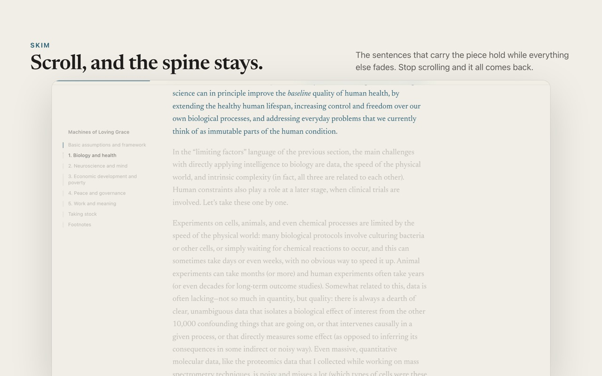
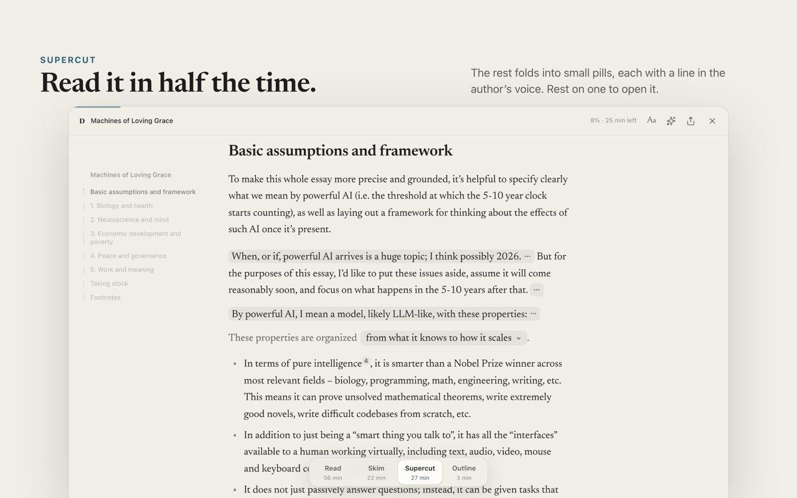
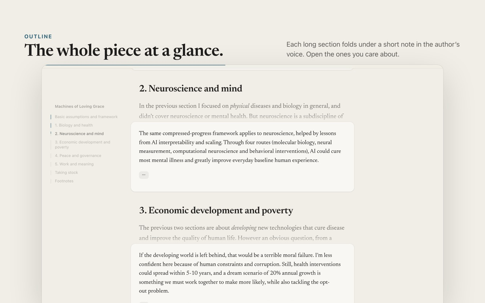
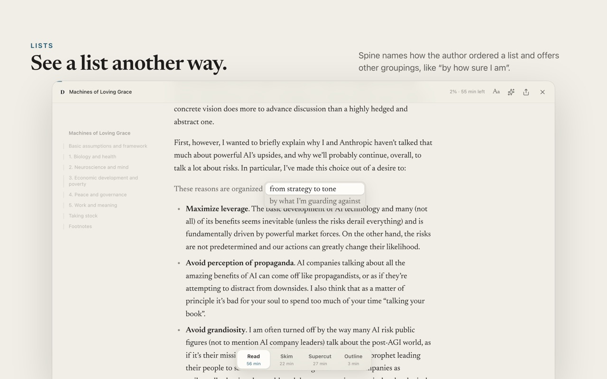

Spine turns a long piece of writing into a calm reader and uses ChatGPT or Claude to find the sentences that carry it. Choose how much you see: all of it, the key sentences, or a note for each section. The author’s words stay; the rest folds away, one hover from view.
Free and open source, for Chrome, Arc, Brave, Edge, Dia and Aside. It reads on your ChatGPT or Claude plan, or with an Anthropic API key. What it costs
Most long essays are worth reading, and most of us never finish them. We save them for a later that never comes. … We save them for later, and later rarely comes. The essay sits in a tab, then in a list, then nowhere.
The problem isn’t length. A good essay is long because its argument needs room: each idea is set up, tested and joined to the next. Summaries throw that away. They keep the end and lose the reasoning. … They keep the conclusion and lose the reasoning that made it worth believing.
What helps is seeing the spine first. When the sentences that carry the argument stand out, you can follow the whole piece at a glance and slow down wherever it matters to you. The rest stays, folded, one hover away. … Everything else stays where the author put it, one hover away.
Switch with the dock at the bottom of the page, or the keys 1 to 4. Your place never moves.




It takes a minute. Spine reads on a ChatGPT or Claude plan you already pay for, or with an Anthropic API key; without one, it’s still a calm reader view.
chrome://extensions in the address bar and turn on Developer mode, top right.spine folder. Keep the folder: your browser loads Spine from it.Press ⌥ ⇧ S on a Mac, or Alt Shift S on Windows, or select Spine’s toolbar button.
Press ? in Spine for every shortcut.
The first time, Spine asks right in the reader. Continue with ChatGPT signs in to your Plus or Pro plan, with nothing to install. Use Claude Code shows you one command to paste into Terminal, once.
ChatGPT or Claude reads each piece once, in 15 to 60 seconds, and Spine saves the notes, so reading it again is free.
Spine is free. With ChatGPT, Claude Code or Codex, reading runs on your ChatGPT or Claude plan, with nothing extra to pay. With an API key, Anthropic bills your API credits, once per article: Spine saves the notes, so reading an article again costs nothing.
| Reader | Short post, 3 minutes | Long essay, 50 minutes |
|---|---|---|
| ChatGPT, Claude Code or Codex | on your plan | on your plan |
| API key, Claude Opus 5.5 | about 6¢ | about 62¢ |
| API key, Claude Sonnet 5.5 | about 3¢ | about 31¢ |
| API key, Claude Haiku 4.5 | about 2¢ | about 15¢ |
Spine has no servers, analytics or tracking. Your sign-in, key, notes and settings stay in your browser.
When you agree, Spine sends the text of the articles you open to the reader you chose, ChatGPT, your own Claude Code or Codex, or Anthropic with your key, and nothing else.
Turn it off any time in Spine’s settings. Read the privacy policy.